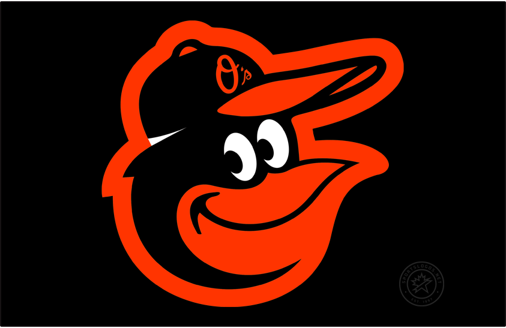

The Orioles were founded in 1901. They were known as the Milwaukee Brewers before moving to St. Louis in 1902. After spending 52 years in St. Louis, they moved to Baltimore and became the Orioles in 1954. The Orioles had their greatest success from 1966 to 1983. They played in seven World Series during that time and won three of them in 1966, 1970, and 1983. After 14 straight losing seasons from 1998 to 2011, the Orioles hired Buck Showalter. They made the playoffs three times during his tenure, qualifying for the ALCS in 2014. However in 2018, they lost 115 games, the most in franchise history. They have not made the playoffs since 2016.
